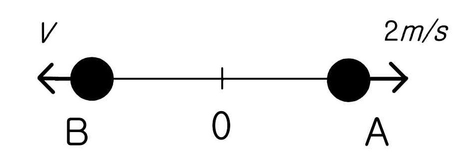

문제 9
원점 O에서 정지하고 있는 질량 3kg인 물체가 폭발하여, 그림과 같이 A, B 두 개의 파편으로 나누어졌다. A의 질량은 2kg이고, B의 질량은 1kg이다. A의 속력이 \(2 \, \text{m/s}\)일 때, B의 속력 \(V\)를 구하시오. (10점)

원점 O에서 정지하고 있는 질량 3kg인 물체가 폭발하여, 그림과 같이 A, B 두 개의 파편으로 나누어졌다. A의 질량은 2kg이고, B의 질량은 1kg이다. A의 속력이 \(2 \, \text{m/s}\)일 때, B의 속력 \(V\)를 구하시오. (10점)